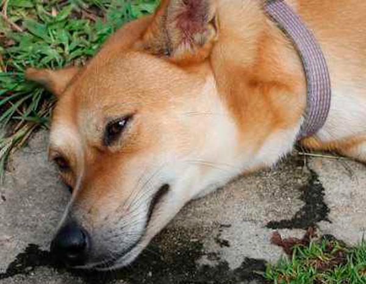

A lo largo de la vida de nuestra mascota, es normal que determinadas enfermedades vayan apareciendo en su organismo. Dependiendo de la raza, la frecuencia de éstas será mayor o menor. No obstante, hay patologías que no las esperamos porque son poco comunes. Las convulsiones en perros pueden entrar perfectamente en este grupo. Pero, ¿a qué se le considera convulsión canina? Este tipo de patología aparece cuando el cerebro de nuestra mascota se desequilibra, ocasionando un fallo en las señales de excitación e inhibición de sus neuronas. Esta situación provoca que el cerebro mande descargas eléctricas que tienen como consecuencia los ataques del perro.
CAUSAS DE LAS CONVULSIONES EN PERROS
Las convulsiones no son síntomas que vayan relacionados con una única enfermedad o causa. Una de las complicaciones que acarrea este tipo de disfuncionalidad neuronal es la gran cantidad de patologías a la que puede ir relacionado. Los padecimientos que se pueden asociar a este síntoma son los siguientes:
- EPILEPSIA
Desde el primer momento en el que aparecen, las convulsiones, comúnmente, se relacionan con la epilepsia. Aunque suele ser una de las patologías más conocidas y extendidas, no hay que hacer diagnósticos precipitados sin una valoración veterinaria. Los primeros ataques epilépticos se dan en los canes desde los seis meses hasta los cinco años de edad. Hablamos de una enfermedad hereditaria que provoca perdida de la conciencia, postración, pedaleo, salivación, defecación, micción y -las ya nombradas-convulsiones.
- ENCEFALITIS O MENINGITIS
La inflamación del encéfalo o de la meninge pueden ser dos causas que impliquen la convulsión de tu perro. Suelen estar provocadas por una infección vírica como el moquillo canino, la erlichiosis o toxoplasmosis.
- ENFERMEDADES METABÓLICAS
Dichas patologías son variadas y provocan pérdidas en el metabolismo del can bastante importantes: hepatitis, hiperlipoproteinemia, hipertermia, hipocalcemia, etc.
- ACCIDENTES CARDIOVASCULARES
Con este tipo de anomalías, la cantidad de sangre que llega al cerebro no es la idónea, teniendo como consecuencia fallos cardiovasculares en los perros. Algunos ejemplos de este tipo de accidentes son las embolias y las hemorragias cerebrales.
- MALFORMACIONES CONGÉNITAS
Una de las más comunes es la hidrocefalia, un trastorno que consiste en el aumento anormal de la cantidad de líquido cefalorraquídeo en las cavidades del cerebro. Dicho líquido se encarga de eliminar los residuos producidos por el continuo funcionamiento del sistema nervioso. Es una patología común en las siguientes razas: yorkshire terrier, chihuahua, pomerania, poodle toy, boston terrier y maltés.
- TUMOR CEREBRAL
En el peor de los casos para nuestro fiel compañero, un tumor puede estar detrás de dichas convulsiones en perros. La aparición del tumor puede dañar la masa cerebral y provocar este tipo de comportamientos anómalos.
- INTOXICACIÓN POR CONSUMO DE SUSTANCIAS
Los componentes químicos de este tipo de sustancias dañan al cerebro de nuestra mascota. Anticongelantes para coches, plaguicidas tóxicos, desparasitantes externos, plomo, cianuro o metaldehído, entre otros, encabezan las sustancias perjudiciales para nuestra mascota.
- TRAUMATISMOS EN LA CABEZA
Un golpe más fuerte de lo normal puede derivar en convulsiones que nuestro perro no había experimentado hasta la fecha. Ante cualquiera de estas causas lo más recomendable es, sin duda, acudir al veterinario y que nos otorgue un diagnóstico claro.
FASES DE LAS CONVULSIONES EN PERROS
En general, en las convulsiones se pueden contemplar varias etapas que nos van a permitir detectar con antelación lo que le pasa a nuestro perro y, de esta forma, tener más probabilidades de garantizar su salud.
- FASE PREICTUS
Su duración varía desde unos minutos a varios días. El can comienza a comportarse de forma extraña y se muestra nervioso sin motivo aparente. Algunos de los síntomas de esta fase son los temblores, la confusión, la descoordinación y la excesiva salivación.
- FASE ICTUS
Es un período que puede durar varios segundos o minutos. Representa el comienzo del ataque. El perro suele perder la conciencia y caer de lado al suelo. Acto seguido, comienza a pedalear inconscientemente. Además, es probable que el can vomite, miccione y defeque.
- FASE POSTICTUS
Es una etapa que nos va a permitir medir cómo de intensa ha sido la convulsión que ha sufrido nuestro perro. Es probable que, si ha ido bastante fuerte, el can manifieste determinadas secuelas que durarán varios días: confusión, ceguera, temblores, etc.
¿CÓMO ACTUAR ANTE UN ATAQUE DE CONVULSIONES EN PERROS?
Es lógico y normal que ante una situación de estas características, el nerviosismo se apodere de nosotros. Al tratarse de algo que no esperamos, es probable que no actuemos de una forma adecuada. Por ello, te mostramos todo aquello que debes hacer y todo aquello que debes evitar cuando tu perro sufra una convulsión.
- ¿QUÉ DEBO HACER SI MI PERRO TIENE UN ATAQUE DE CONVULSIÓN?
Mantener la calma es lo primero que debes hacer. En circunstancias límites de este tipo, pensaremos mucho mejor si mantenemos la mente tranquila y sin nervios. Una vez estemos calmados, tendremos que retirar cualquier objeto que se encuentre cerca de nuestro perro para que este no se lastime. Una vez haya pasado el ataque, es importante que desplacemos a nuestra mascota a un sitio fresco y ventilado, de lo contrario, su recuperación podría empeorar. Inmediatamente después, lo que deberás hacer es acercar a tu fiel compañero al veterinario más cercano. Con un diagnóstico profesional precioso, lograrás descubrir qué ha causado la convulsión al can. Los días, semanas y meses posteriores deberás administrar a tu perro la medicación pertinente que te haya recetado el veterinario. Es importante ser constante en este sentido. Si, aun así, los ataques continúan, será preciso llevarlo de nuevo al veterinario.
- ¿QUÉ NO DEBES HACER?
En pleno ataque, un comportamiento habitual por parte de los dueños es el de intentar agarrar al can para que no se tambalee. Se trata de un error claro, puesto que -aparte de que la convulsión no se va a frenar- el perro no se encuentra consciente en ese momento y podría herir a la persona (a través de un mordisco o un arañazo). Tampoco se debe suministrar agua o alimentos al perro en plena convulsión. De ninguna de las maneras es conveniente colocar al can objetos que le proporcionen calor. Por lo tanto, se debe evitar arroparle con mantas, sabanas, ropa, etc. Por último, tampoco se debe administrar al perro medicamentos que no hayan sido recetados por el veterinario. ¡No hagas diagnósticos por tu cuenta! Las convulsiones en perros, en la mayoría de los casos, no se pueden evitar. Por ello, desde Mascota y Salud, te recomendamos que cuentes con un veterinario de confianza para que pueda atender a tu perro de la mejor forma posible. Si no tienes ninguno, recuerda que en nuestra web hay una amplia red de profesionales y de centros.